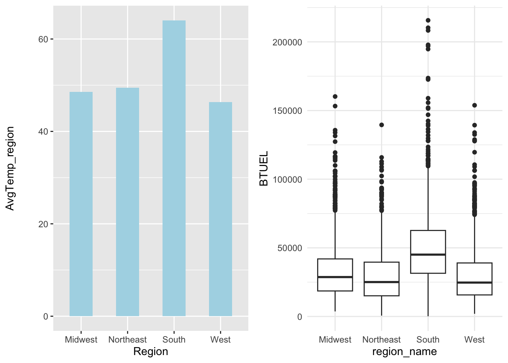
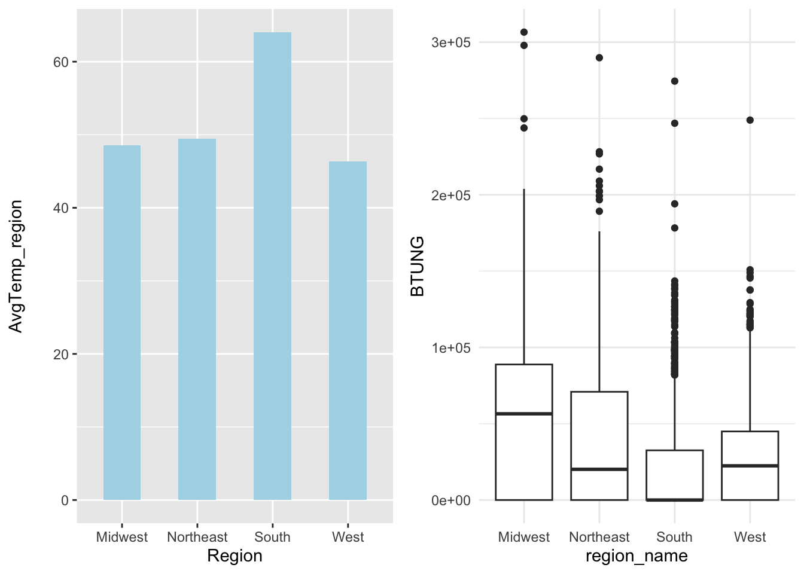

weather$State.abb <- str_remove_all(string = weather$State.abb, pattern ="\"")
weather$State.name <- str_remove_all(string = weather$State.name, pattern ="\"")
weather$Timestamp <- str_remove_all(string = weather$Timestamp, pattern ="\"")
weather <- weather %>% left_join(region, by = c("State.name" = "State", "State.abb" = "State.Code")) %>%
select(State.name, Region, AvgTemp, MaxTemp, MinTemp) %>%
filter(!is.na(Region))
temp_region <- weather %>% group_by(Region) %>%
summarise(AvgTemp_region = mean(AvgTemp),
AvgMaxTemp = mean(MaxTemp),
AvgMinTemp = mean(MinTemp)) x <- temp_region %>% ggplot(aes(x = Region, y = AvgTemp_region))+
geom_col(fill = "lightblue", width = 0.5)
temp_region %>% ggplot(aes(x = Region, y = AvgMaxTemp))+
geom_col(fill = "red")
temp_region %>% ggplot(aes(x = Region, y = AvgMinTemp))+
geom_col(fill = "blue")
y <- recs %>%
ggplot(aes(x = region_name, y = TOTALBTU)) +
geom_boxplot() +
theme_minimal()
main_plot <- ggarrange(x, y, ncol = 2, nrow = 1, align = "v")
main_plot
It is quite interesting how Southern states use less energy compared to Midwestern and Northeastern states despite its higher temperature. This might be due to higher use of natural gas, propane in colder states. It is also intriguing to look into housing efficiency differences between regions.
y1 <- recs %>%
ggplot(aes(x = region_name, y = BTUEL)) +
geom_boxplot() +
theme_minimal()
main_plot1 <- ggarrange(x, y1, ncol = 2, nrow = 1, align = "v")
main_plot1
y2 <- recs %>%
ggplot(aes(x = region_name, y = BTUNG)) +
geom_boxplot() +
theme_minimal()
main_plot2 <- ggarrange(x, y2, ncol = 2, nrow = 1, align = "v")
main_plot2
Looking closer to the usage of electricity, the South unsurprisingly consumes the most. This is likely because of their uses of AC to keep their house cool during hot weather. Whereas, the other regions contributes to much less electricity since they distribute their share of energy usage to natural gases and propane.